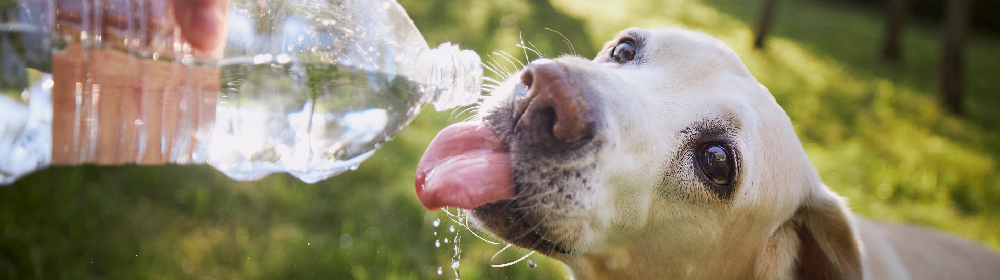
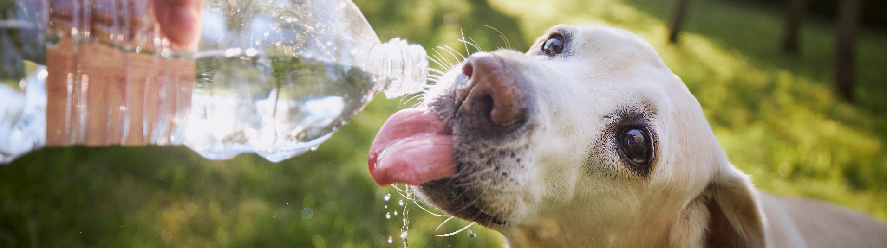

1.Mantenha a higiene em dia
É importante adotar cuidados com a higiene desde muito cedo. Os primeiros banhos podem ser dados a partir de um mês de vida. A limpeza dos dentes deve ser estimulada desde cedo, para que se acostumem com a escovação. Para os filhotes, envolver o dedo com um pano macio limpo ou uma fralda e limpar a gengiva do animal. Há no mercado escovas e cremes dentais próprios para isso. A frequência de escovação deve ser diária para evitar o acúmulo de tártaro e problemas na gengiva.
2.Faça passeios regularmente com o pet
Quem não gosta de aproveitar os dias ensolarados para dar um passeio com o cãozinho? Mais do que ter momentos de descontração na companhia de um amigo fiel, estamos falando de uma oportunidade única de proporcionar aos animais o contato com outros da mesma espécie. De quebra, tanto o tutor quanto o pet podem usufruir de um momento para praticar um pouquinho de exercício físico.
3.Disponibilize brinquedos que o cão ou o gato gostem
Estimular seu amiguinho a fazer um pouco de movimento proporciona uma série de benefícios para a saúde e o bem-estar dele. Quem tem gatos em casa sabe que os bichanos passam grande parte do dia dormindo. A fim de quebrar essa preguicinha, podemos utilizar alguns brinquedinhos como bolas coloridas, ratinhos e arranhadores.
4.Dedique um momento do dia para interagir com o animal
Apatia, perda de pelos e falta de apetite podem ser sintomas de depressão.Ainda que você tenha uma rotina bastante corrida, precisa organizar sua agenda para dedicar alguns minutinhos do seu dia àquele que fica à sua espera e faz uma festa com a sua chegada. Pegue no colo, faça carinho, escove o pelo, brinque com uma bolinha, seja qual for a maneira, trata-se de um gesto simples e costuma ser muito gratificante.
5.Organize objetos e itens da casa de acordo com a idade do pet
Os animais, ainda que estejam em idade adulta, precisam de um ambiente seguro. Nesse contexto, é importante organizar os itens da casa para evitar acidentes. Com vistas a evitar intoxicações por ingestão de substâncias nocivas à saúde, acondicione produtos de limpeza, cosméticos e medicamentos em locais específicos e fora do alcance dos animais.
6.Ofereça uma alimentação balanceada e de qualidade
Olhos expressivos, pelagem brilhante e muita disposição para brincar com a criançada são sinais claros de que seu animal está em plena forma. Um dos fatores que contribui para toda essa alegria está em proporcionar ao seu mascote uma alimentação balanceada.A alimentação natural está ganhando muitos adeptos, pois, em comparação com as rações industrializadas, apresenta propriedades que suprem de forma efetiva as carências nutricionais dos animais.
7.Consulte periodicamente o veterinário
Os filhotes precisam consultar mensalmente, durante os seis primeiros meses de vida. Quando adultos, a partir dos sete meses, precisam ser submetidos às consultas anualmente. Idosos, a partir dos 7 ou 8 anos, precisam visitar o médico veterinário a cada 6 meses. A avaliação clínica, exames de sangue, urina e, quando necessário, exames específicos como eletro e ecocardiograma, radiografias, ultrassom, entre outros.
8.Fique de olho no cuidado com animais durante o inverno e o verão
Os cuidados precisam ser dobrados caso seu pet seja filhote ou idoso. Veja algumas práticas que podem ser aplicadas:
- Utilize roupinhas quentes;
- Disponha cobertores nos locais onde o pet costuma dormir;
- Faça passeios em horários mais quentes;
- Procure secar a pelagem após o banho;
- Consulte um veterinário para fazer uma suplementação alimentar.
9.Vacinação para cães: quais vacinas são essenciais?
A vacinação para cães é um dos cuidados mais importantes que o tutor deve proporcionar para os seus animais. Não só para manter os amiguinhos de quatro patas saudáveis, como também para garantir o bem-estar dos tutores, já que algumas doenças podem ser transmitidas entre os cachorros e as pessoas.Contar com a ajuda de um profissional é muito importante para garantir a imunização completa do animal.
10.Vacina polivalente: a primeira proteção do pet
A administração é feita em três ou quatro doses, dependendo da raça e idade do pet. Durante esse período, o animal não pode passear na rua, mas pode ir visitar amigos e familiares. A primeira vacina do cachorro deve ser aplicada entre 6 e 8 semanas de vida dele. Após um intervalo de 21 a 30 dias, a segunda dose precisa ser administrada. Por fim, a terceira aplicação deve ocorrer quando o cachorro completar 16 semanas de vida ou mais.
11.Vacina antirrábica: proteção para todos
A raiva é uma das doenças que podem ser transmitidas de animais para humanos. A vacina antirrábica é, portanto, uma das principais do calendário de imunização dos animais.Essa é a única vacina obrigatória para os cães e gatos no país. A imunização é feita com uma dose após a 12ª semana de vida do animal. Porém, para garantir a eficácia, é necessário vacinar o cachorro todo ano.
12.Calendário de vacinação canina
O médico veterinário irá fazer a tabela de vacinas para cachorro de acordo com o risco ao qual o animal está sujeito, mas, em geral, o calendário para filhotes segue algumas datas:
- Entre 6 e 8 semanas de vida: primeira dose da vacina polivalente V8 ou V10 com 2 ou 3 reforços, com intervalo entre 21 a 30 dias;
- A partir de 12 semanas: aplicação da vacina antirrábica;
- A partir de 16 semanas: administração das demais vacinas (gripe canina, contra Giardia sp e contra o verme do coração).